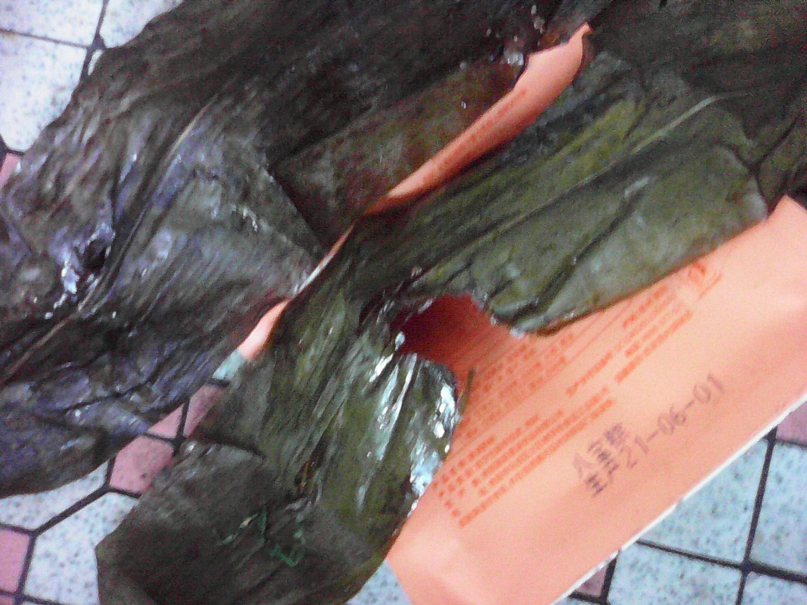
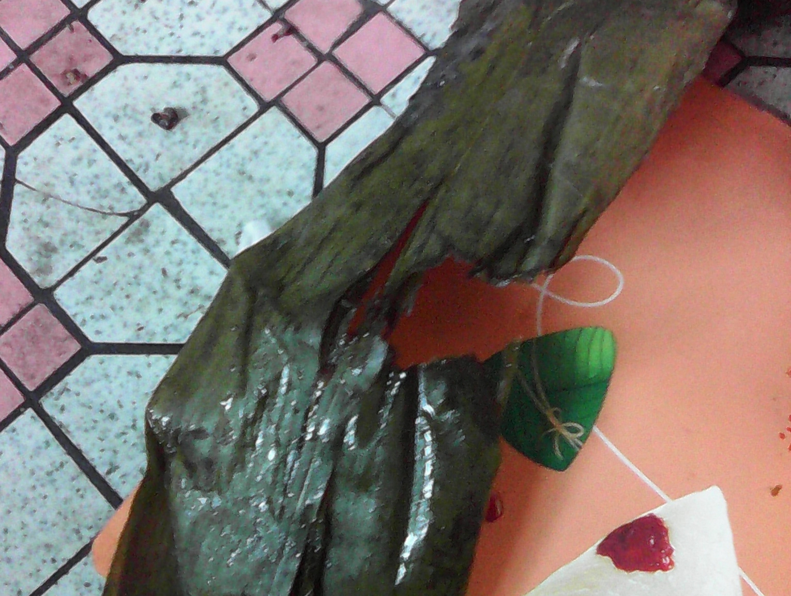

惠诚滋知八宝粽 老鼠上面咬个洞 |
|
我于六月十四日上午在贵州省贵阳市云岩区 惠诚滋知 富水北路店（地址：省府北街1号6栋104）购买 贵阳高新惠诚食品有限公司 生产的八宝粽，六月十六日上午食用后发现其中一个粽子的粽叶上有一个洞，大约有一元硬币大小，另一个粽子的粽叶完好。有洞的粽叶有两层，该洞位于两层粽叶的同一位置。该八宝粽有两层包装，一层真空包装，一层外包装，均完好。 |
|
粽叶上有一个洞是事实，问题是洞是怎么来的。工人在包粽子时是包不出一个洞的，因为粽叶有两层，这个洞穿过了两层粽叶；粽子包好后就只有一个传送带，而且传送带也不能把粽子传送出一个洞来。排除了人为因素和机器的原因，就只有老鼠了，其它动物也不能咬出这么一个洞来。 |
|
食用被老鼠咬过的粽子，对我的身心造成了很大的伤害，我要求惠诚滋知及贵阳高新惠诚食品有限公司必须为对我造成的伤害进行赔偿。 |
 |  |